Prüfbare Bilder und Ergebnisse.
17 technische Browser-Prüfgruppen bestanden, keine fehlgeschlagen. Diese Ergebnisse belegen Verhalten und Darstellung im ausgeführten Umfang, keine künstlerische Freigabe.
Chromium mit SwiftShader, synthetische Inhalte. Echte iPhone-/Safari-/VoiceOver-Prüfungen sind offen.
Die Aufnahme ist ein echter Browsermitschnitt mit protokolliertem Ablauf und Endzustand, kein Smartphone-FPS-Benchmark.
Browserdaten · Raster- und Strukturnachweis · Unabhängige KI-Prüfung und Grenzen

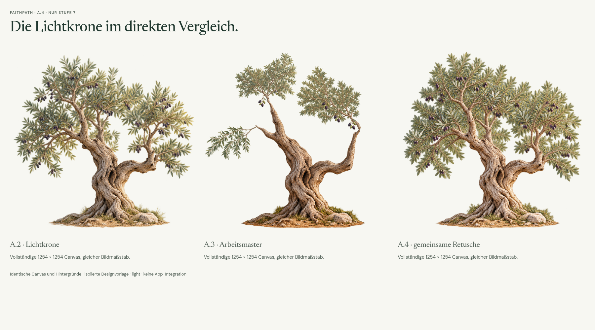

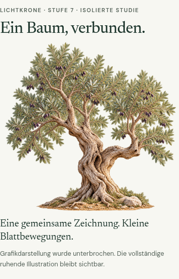

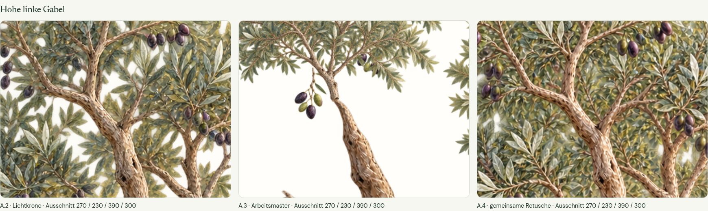

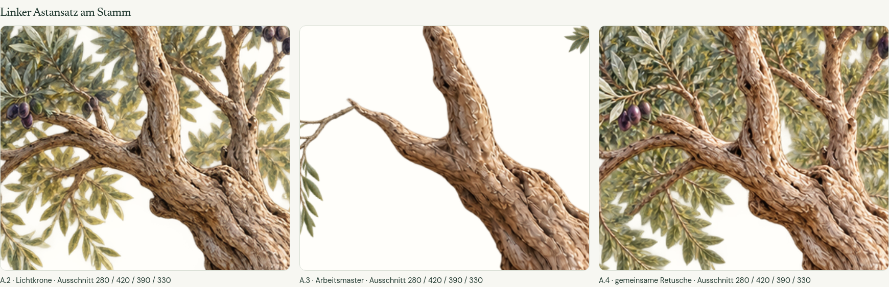

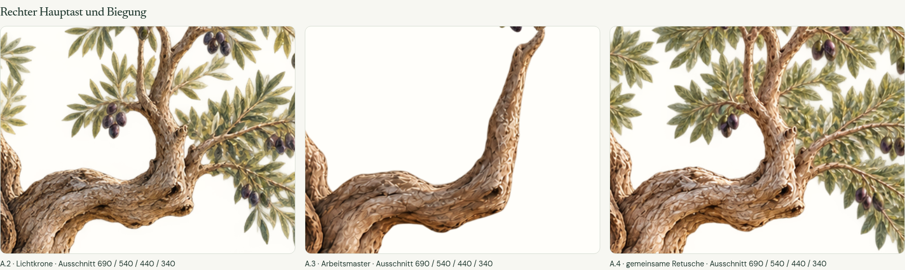

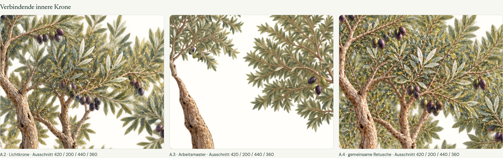

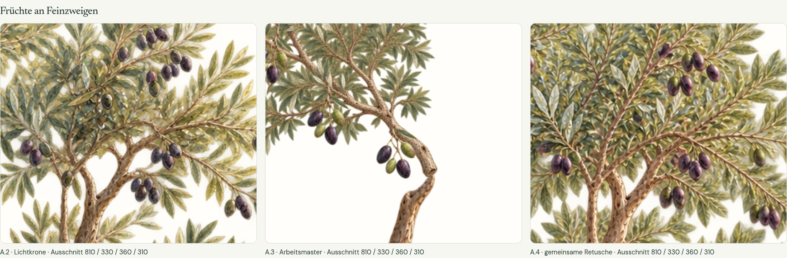

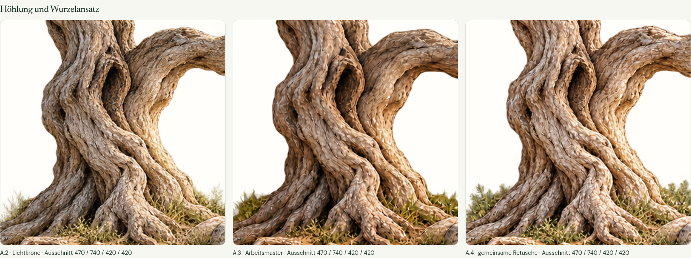

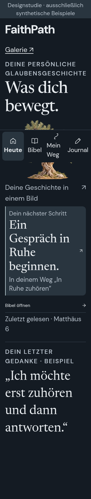

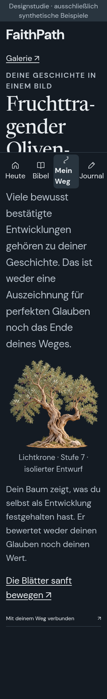


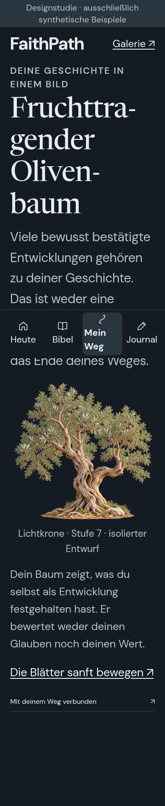

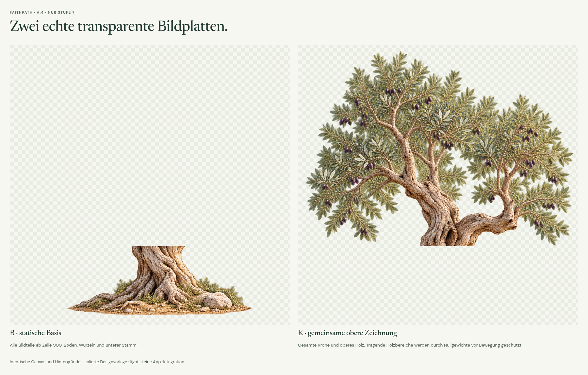


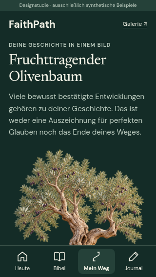


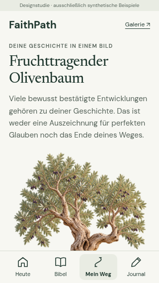

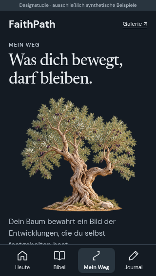

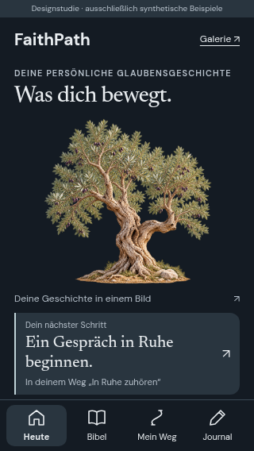

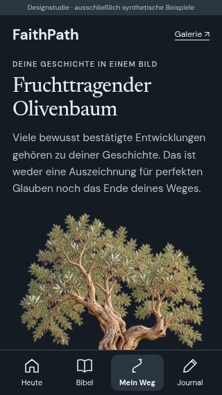


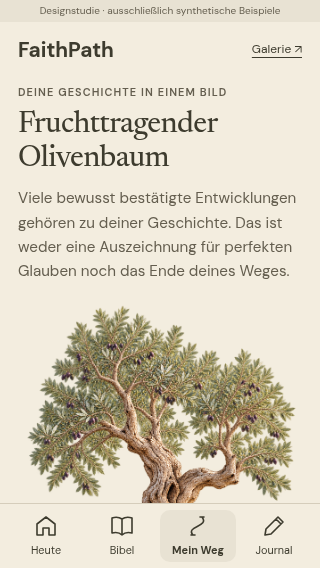


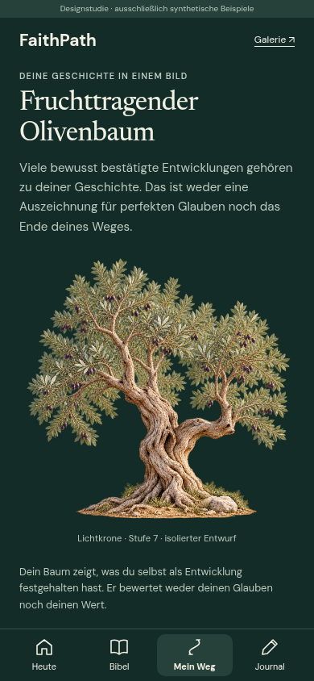

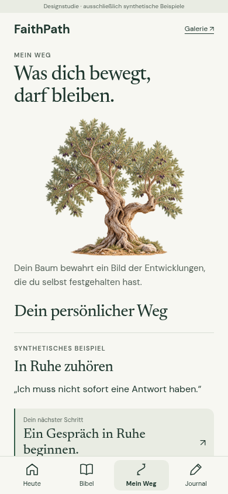


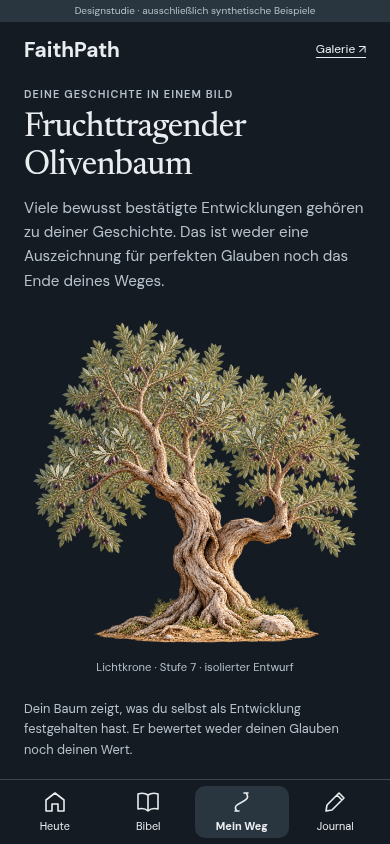


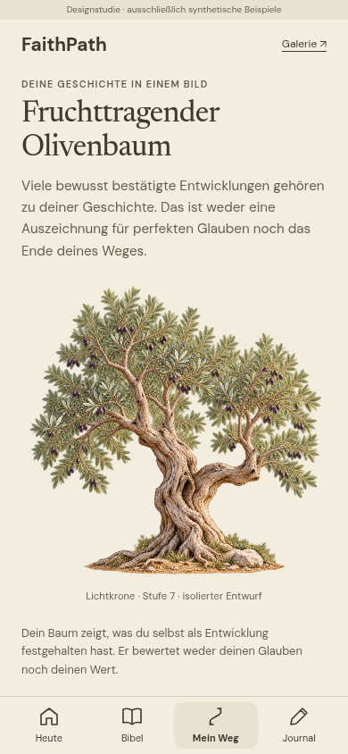

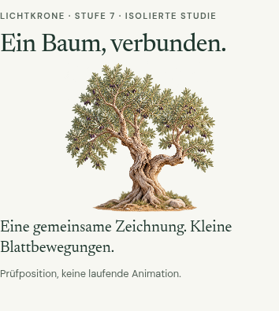


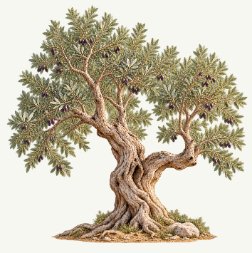


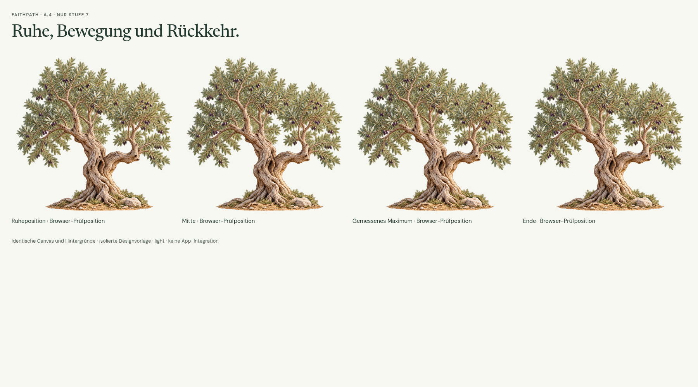

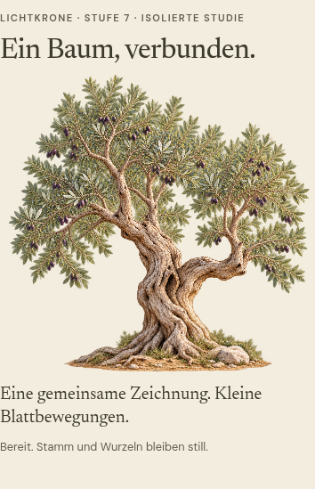

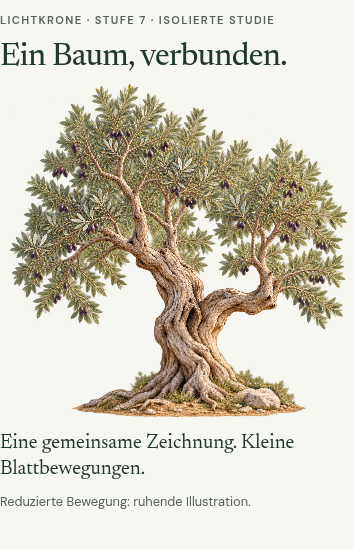

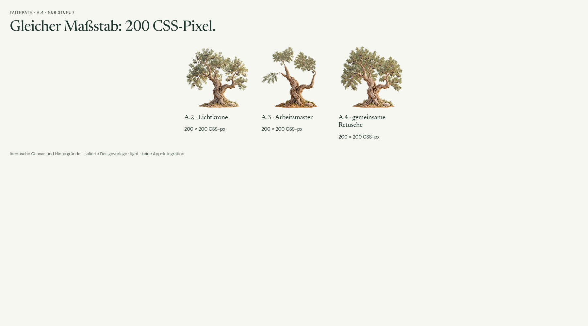
Native tatsächliche Browser-Prüfpositionen.
Deterministisch angewählte Kontrollpositionen aus dem echten Renderer. Die laufende Bewegung zeigt das separate Video.


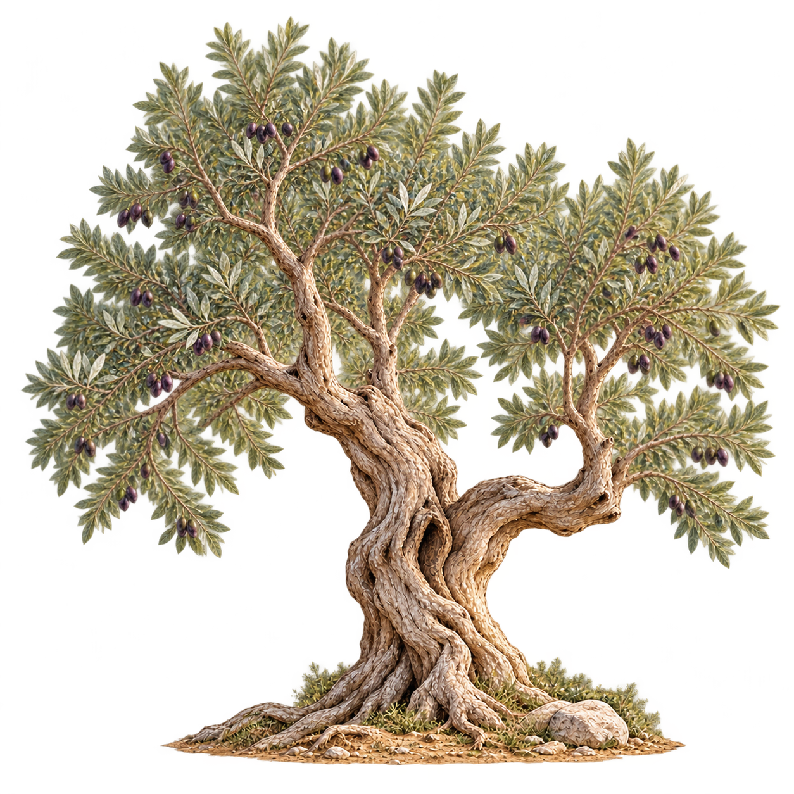


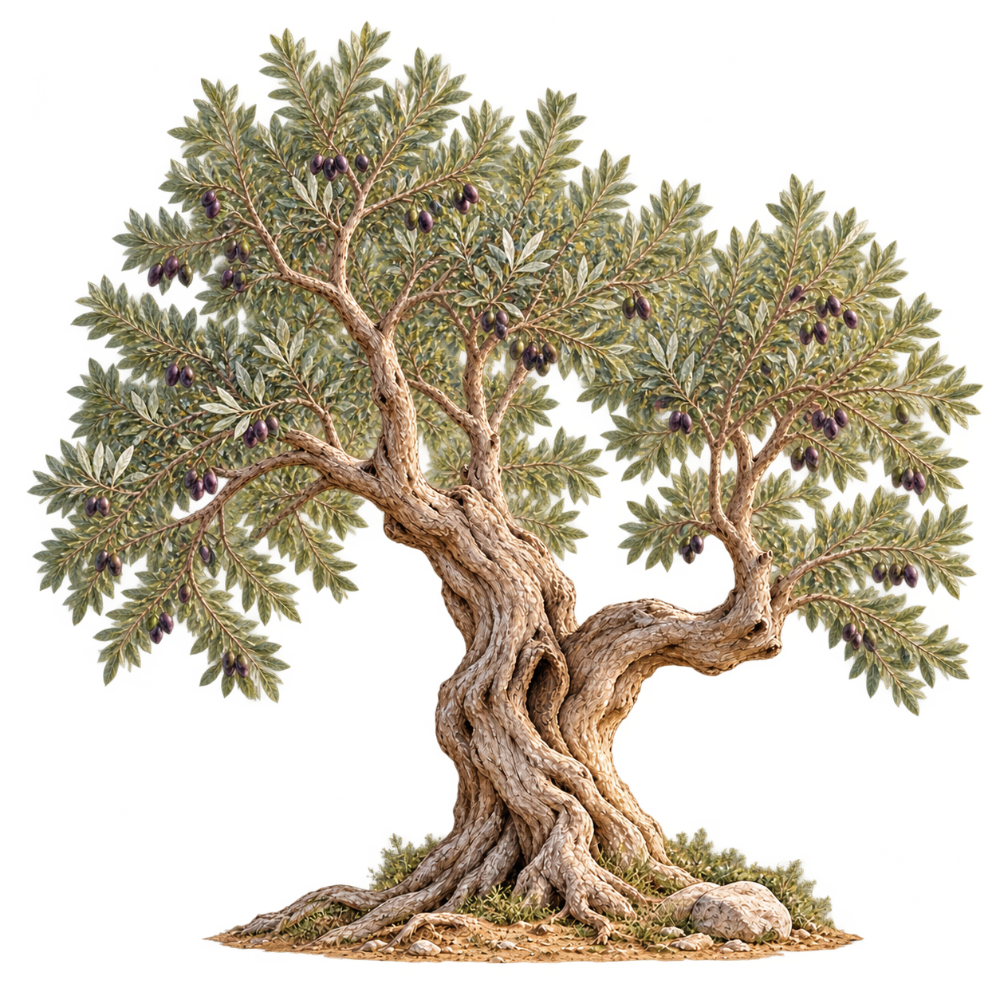